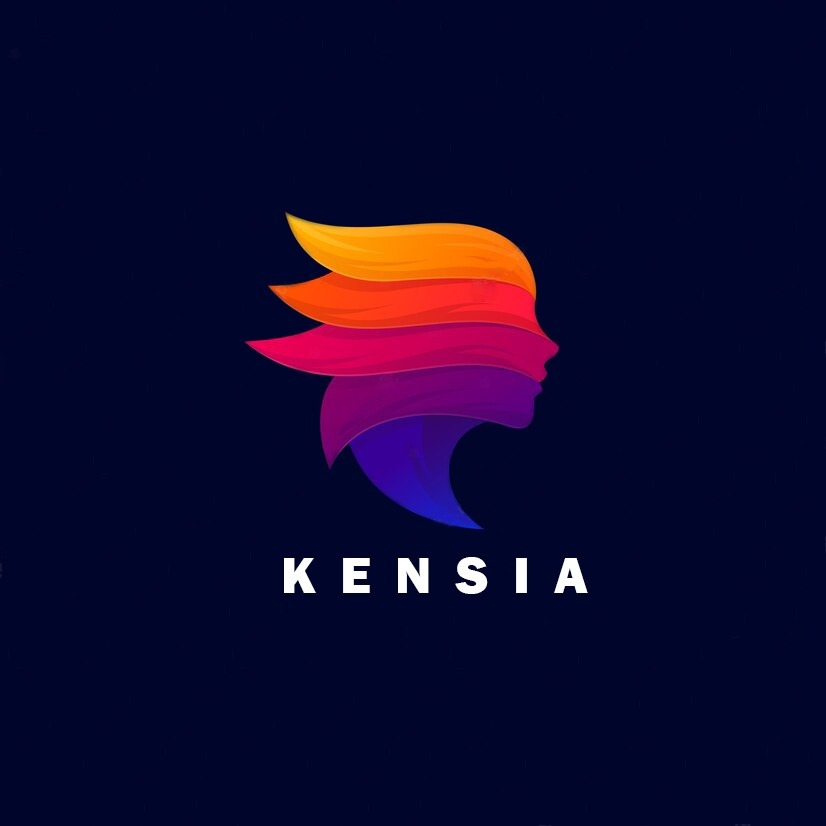

Equidad y
Autonomía
Empoderamiento, derechos y diversidad para las mujeres en Kennedy.

Quiénes Somos
Construyendo derechos desde el territorio
Nuestra Esencia
Somos un grupo de jóvenes de la localidad de Kennedy. Desde el 2020 participamos activamente en procesos de empoderamiento social y político de las mujeres.
Nuestra Misión
Trabajamos colectivamente para contribuir al cambio político y social, logrando el reconocimiento, la garantía, restitución y goce efectivo de los derechos de las mujeres.
Nuestro Enfoque
Articulamos diferentes estrategias de escucha activa, promoción de la autonomía de las mujeres y sensibilización para su reconocimiento en el territorio.
Nuestro Impacto
Acciones concretas en la localidad de Kennedy
2022 | Fondo Chikaná
Ganadores de la Convocatoria Jóvenes con Iniciativas 2022 - Fondo Chikaná.
2023 | Alianza Universidad Nacional
Ejecución del Proyecto CIA 802-2022 (Componente 2). Fortalecimiento para procesos, instancias y espacios organizativos en Kennedy, promoviendo la participación comunitaria a través de entrevistas.
2024 | Encuentros Juveniles
Participación destacada en la Semana de Juventud y Semana Andina 2024 (Categoría de proyectos juveniles), donde desarrollamos un juego de mesa con enfoque en derechos sexuales y reproductivos.
2025 | Iniciativas Ciudadanas
Ejecución de Iniciativas Ciudadanas para la Convivencia 2025 impulsando el empoderamiento territorial.
2025 | FUNDESCO Mujeres
Proyecto CPS 808 ("El arte y la cultura nos fortalece"). Ejecutamos entrevistas y actividades para empoderar a las mujeres a través de las artes.
2025 - 2026 | Memoria y Reconciliación
Ejecución del proyecto CPS 1166-2024. Fortalecimiento de iniciativas ciudadanas para la paz mediante pedagogía, siembra de plantas y fotografía instantánea, buscando el cuidado de las emociones y la memoria colectiva.
Marzo 2026 | Hito Cultural Barrios Vivos
Concertación Laboratorios de Transformaciones Culturales Barrios Vivos (TransMilenio y SCRD). Intervención performática-pedagógica en la Estación Banderas con artistas activadores, usando micro-performances empáticas para reducir el estrés de los usuarios.
Formación y Reconocimiento
Procesos de educación y formalización que respaldan nuestro trabajo.
Presupuestos Participativos
IDPAC (Julio 2023)
Congreso Internacional de Presupuestos Participativos en la Universidad Jorge Tadeo Lozano.
Retos Democráticos de DDHH
IDPAC y ATENEA (Mayo 2024)
Fortalecimiento de capacidades de análisis crítico y creativo. Programa Jóvenes a la E.
Empoderamiento y Participación de Mujeres
IDPAC y ATENEA (Mayo 2024)
Ruta temática de Retos Democráticos para el fortalecimiento de procesos comunitarios. .
Participación con Equidad
Secretaría Distrital de la Mujer (2020-2021)
Participación en la Política Pública de Mujeres y Equidad de Género, integrando el Comité Operativo Local de Mujer y Género.
Veeduría Ciudadana
Alcaldía Local de Kennedy (2021)
Rol veedor y promotor del "Torneo de fútbol Freestyle mixto", beneficiando a 250 jóvenes e impulsando el bienestar.
Uno Más Uno Igual a Todas
CORPODESO (Ago 2019)
Promoción de la Equidad de Género bajo la Política Pública de Mujer y Equidad del Fondo de Desarrollo Local de Kennedy.
Participa Mujer
Alcaldía Local de Kennedy (2021)
Ejecución de la iniciativa para promover la ciudadanía de las mujeres en el marco del proyecto "Kennedy por los derechos de las mujeres".
Clínica Política Lidera-Par
Secretaría Distrital de la Mujer (Dic 2022)
Reconocimiento a la promoción de la paridad y la igualdad política de las mujeres.
Adaptación al Cambio Climático
Alcaldía Local de Kennedy
Diplomado "Kennedy eficiente en la atención de emergencias y adaptación al cambio climático".
Formulación de Proyectos
Universidad Nacional de Colombia (Agosto 2020)
Diplomado "Actualización en Políticas Públicas y Formulación de Proyectos". Convenio Interadministrativo. .